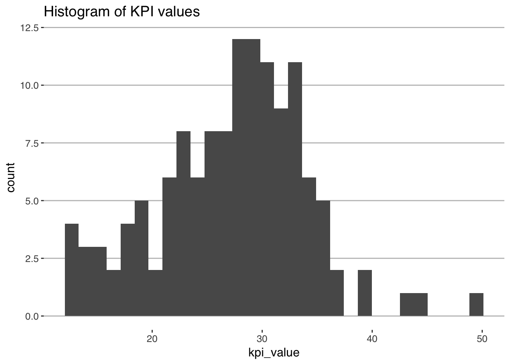
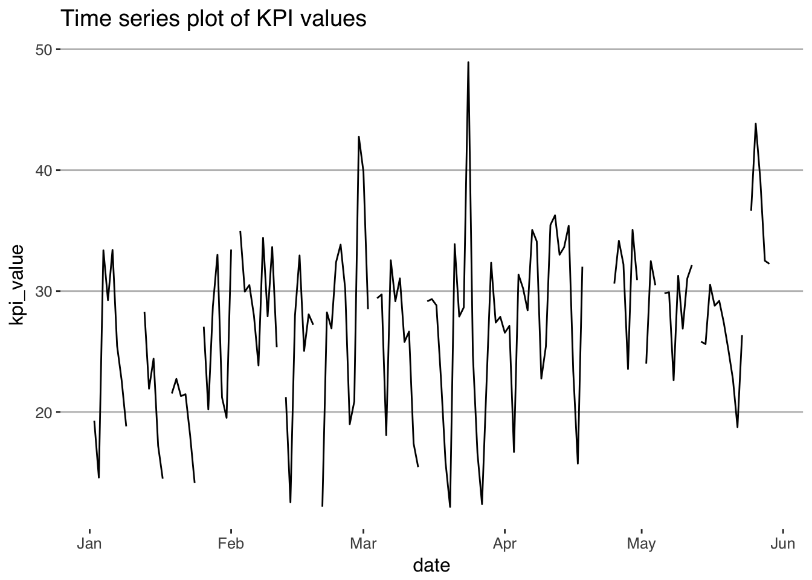
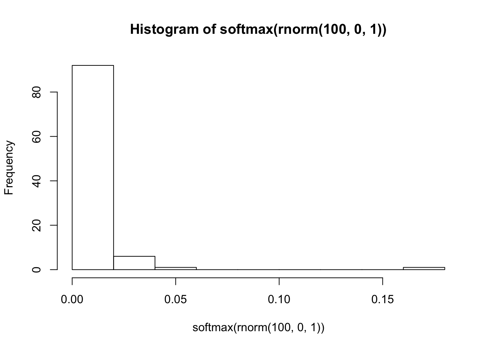
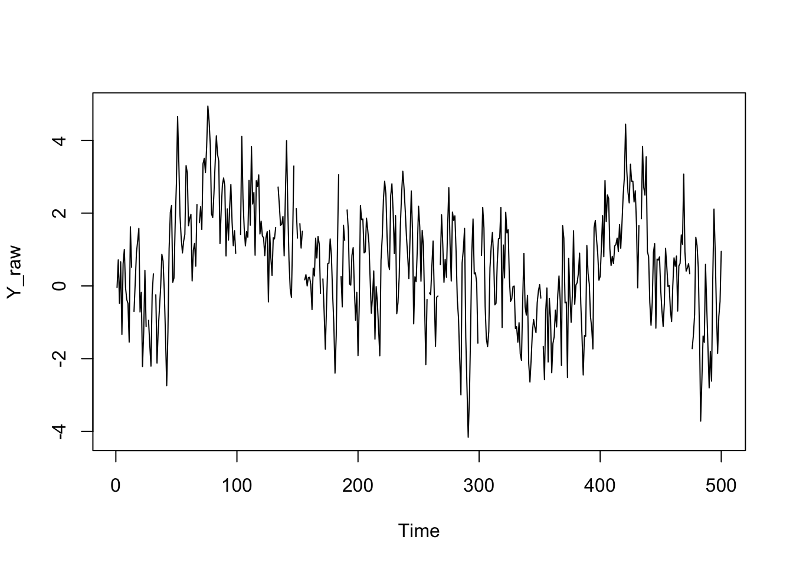

Session 2 Modern Statistical Workflow
This session introduces the process I recommend for model building, which I call “Modern Statistical Workflow”.
2.1 Modern Statistical Workflow
The workflow described here is a template for how to build high-quality, robust models. If you work by it, you will learn models more thoroughly, spot errors more swiftly, and build a much better understanding of economics and statistics than you would under a less rigorous workflow.
The workflow is iterative. Typically we start with the simplest possible model, working through each step in the process. Only once we have done each step do we add richness to the model. Building models up like this in an iterative way will mean that you always have a working version of a model to fall back on. The process is:
- Write out a full probability model. This involves specifying the joint distribution for your parameters/latent variables and the conditional distribution for the outcome data.
- Simulate some data from the model with assumed values for the parameters (these might be quite different from the “true” parameter values).
- Estimate the model using the simulated data. Check that your model can recover the known parameters used to simulate the data.
- Estimate the model parameters conditioned on real data.
- Check that the estimation has run properly.
- Run posterior predictive checking/time series cross validation to evaluate model fit.
- Perform predictive inference.
Iterate the entire process to improve the model! Compare models—which model are the observed outcomes more plausibly drawn from?
2.1.1 Example: A simple time-series model of loan repayments
Before building any model, it is always worth writing down the questions that we might want to ask. Sometimes, the questions will be relativey simple, like “what is the difference in average wages between men and women?” Yet for most large-scale modeling tasks we want to build models capable of answering many questions. In the case of wages, they may be questions like:
- If I know someone is male and lives in the South what should I expect their wages to be, holding other personal characteristics constant?
- How much does education affect wages?
- Workers with more work experience tend to earn higher wages. How does this effect vary across demographic groups?
- Does variance in wages differ across demographic groups?
As a good rule of thumb, the more questions you want a model to be able to answer, the more complex the model will have to be. The first question above might be answered with a simple linear regression model, the second, a more elaborate model that allows the relationship between experience and wages to vary across demographic groups; the final question might involve modeling the variance of the wage distribution, not just its mean.
The example given below introduces a simple autoregressive model of a daily KPI from a microfinance company. We’ll introduce an additional complexity—the fictitious client’s systems are unreliable, and for some days, there are missing values for the KPI.
Let’s walk through each step of the workflow, gradually introducing Stan along the way. First, let’s download the data.
library(readr)
# Download file from:
# https://github.com/khakieconomics/half_day_course/blob/master/KPI_data.csv then
KPI_data <- read_csv("KPI_data.csv")2.1.2 Step 1: Writing out the probability model
The first step of of our workflow is to propose an underlying generative model. It’s helpful to think of a generative model as being a structured random number generator, which when simulated, generates outcomes with a distribution that looks like the distribution of the outcome variable. Once we have decided on the generative model, we then get into the specifics of endogeneity issues etc. In deciding the choice of distribution to use, you should plot a histogram or density of the outcome. For example, we could generate a histogram of the KPI like so:
library(ggplot2)
ggplot(KPI_data, aes(x = kpi_value)) +
geom_histogram() +
ggthemes::theme_hc(base_size = 12) +
ggtitle("Histogram of KPI values")
We can also plot the time series
library(ggplot2)
ggplot(KPI_data, aes(x = date, y = kpi_value)) +
geom_line() +
ggthemes::theme_hc(base_size = 12) +
ggtitle("Time series plot of KPI values")
As we can see, the KPI seems to have a bit of a bell-shaped curve, does not seem to be (locally) truncated, and is continuous. It’d make sense to choose a density from a family that has such characteristics, like:
- Normal
- Student’s t
- Cauchy
- Gumbel
If we decide to choose a normal density as the data-generating process, and assume that the conditional distribution is an autoregressive model with \(p\) lags.
\[ \mbox{kpi}_{t} \sim \mbox{Normal}(\alpha + \beta_{1}\mbox{kpi}_{t-1} + \dots + \beta_{p}\mbox{kpi}_{t-p}, \sigma) \]
which says that a the value of the KPI is distributed according to a normal distribution with location \(\alpha + \beta_{1}\mbox{kpi}_{t-1} + \dots + \beta_{p}\mbox{kpi}_{t-p}\) and scale \(\sigma\). In the case of a normal density, the location is the mean, and the scale is the standard deviation. We prefer to use “location” and “scale” rather than “mean” and “standard deviation” because the terminology can carry across to other densities whose location and scale parameters don’t correspond to the mean or standard deviation.
The parameters of the generative model are both “true” and unknown. The entire point is to peform inference in order to get probabilistic estimates of the “true” parameters.
2.1.2.1 Choosing the right generative model
Above, we picked out a normal density for the conditional distribution of the KPI. a reasonable first step in modeling our wage series. How did we get to this choice? The choice of distribution to use should depend on the nature of your outcome variables. Two good rules of thumb are:
- The chosen distribution should not give positive probability to impossible outcomes. For example, wages can’t be negative, and so if we were to use a normal density (which gives positive probability to all outcomes) to model wages, we would be committing an error. If an outcome is outcome is binary or count data, the model should not give weight to non-integer outcomes. And so on.
- The chosen distribution should give positive weight to plausible outcomes.
2.1.2.2 Choosing priors
To complete our probability model, we need to specify priors for the parameters \(\alpha\), \(\beta\) and \(\sigma\). Again, these priors should place positive probabilistic weight over values of the parameters that we consider possible, and zero weight on impossible values (like a negative scale \(\sigma\)). In this case, it is common to assume normal priors for regression coefficients and half-Cauchy or half-Student-t priors on scales.
A great discussion of choosing priors is available here.
In this case, we don’t know how many lags to include. One approach is to use the so-called Horseshoe prior, a prior that shrinks coefficients on uninformative parameters very strongly towards zero, without having a large effect on the remaining coefficients. This is similar in spirit to LASSO or Ridge Regression.
The horseshoe prior is:
\[ \beta_{i} \sim \mbox{Normal}(0, \tau \lambda_{i}) \] with
\[ \lambda_{i} \sim \mbox{Cauchy}_{+}(0, 1) \] And \(\tau\) either provided by the modeler, or estimated. \(\tau\) is the global shrinkage coefficient, and \(\lambda_{i}\) will take large values when \(\beta_{i}\) is non-zero, and small values otherwise.
2.1.3 Step 2: Simulating the model with known parameters
An extremely important step in the workflow is to simulate the model with known values for the unknowns. This mightn’t seem very useful when you’re working with simple models, but as your models become more complex, it’s an extremely step.
There are two broad approaches to simulating your model with known parameters. The first is to hard-code the parameter values. This is fairly straightforward, and may be prefered when some parameter combinations result in unidentifiable models but it’s hard to define priors that place zero weight on such parameter combinations. A classic case of this is with time-series models, for which some parameter combinations result in an explosive time-series, but those parameter combinations do not have natural priors that would constrain them to be stationary.
The second approach is more robust, but it applies to a smaller set of models. In this approach we draw values of the unknowns directly from the priors, and then simulate data. This approach has several large benefits. First, it helps you get a sense for how reasonable your priors are. Quite recently, some colleagues and I were playing around with latent variables in high-dimensioned classification models of the form
\[ y \sim \mbox{categorical}(\mbox{softmax}(\theta)) \] where the softmax of \(\theta\) is \(\frac{\exp(\theta)}{\sum\exp(\theta)}\). Let’s say that \(y\) can take 100 values and we have a diffuse prior \(\theta \sim \mbox{normal}(0, 100)\). What does the distribution of probabilities look like for this process?

Unless you think that one outcome is certain and the others have probability zero, a \(\mbox{normal}(0, 100)\) prior is clearly unreasonable. On the other hand, what if we were to use \(\mbox{normal}(0, 1)\)?

This is a far more reasonable looking distribution of probabilities.
Let’s generate some known parameters and covariates and simulate our AR model.
T <- 500
alpha <- 0
beta <- c(0.3, 0, 0, 0, 0, .6)
sigma <- 1
Y_raw <- NULL
Y_raw[1:6] <- rnorm(6, alpha)
for(i in 7:T) {
Y_raw[i] <- rnorm(1, alpha + Y_raw[(i-6):(i-1)] %*% beta, sigma)
}
plot.ts(Y_raw)
# Set some values to NA (Stan doesn't like NA, so we use some weird number)
Y_raw[sample(1:T,20)] <- NA
plot.ts(Y_raw)
Y_raw[is.na(Y_raw)] <- -9
N_missing <- 20# In R:
# Load necessary libraries and set up multi-core processing for Stan
options(warn=-1, message =-1)
library(dplyr); library(ggplot2); library(rstan); library(reshape2)
options(mc.cores = parallel::detectCores())Next we write out our Stan model. This one is a little involved so let’s step through it slowly
// saved as ar_model_missing_data.stan
data {
int T; // number of observations
int P; // number of lags
int N_missing; // the number of missing values
vector[T] Y_raw; // the time series
}
parameters {
real alpha;
vector[P] beta;
vector<lower = 0>[P] lambda;
real<lower = 0> tau;
vector[N_missing] missing;
real<lower = 0> sigma;
}
transformed parameters {
vector[T] Y; //
matrix[T, P] X; // lags matrix
{
int count;
count = 0;
for(t in 1:T) {
if(Y_raw[t] == -9) {
count = count + 1;
Y[t] = missing[count];
} else {
Y[t] = Y_raw[t];
}
}
}
for(t in 1:T) {
if(t<P) {
X[t] = rep_row_vector(0, P);
} else {
X[t] = Y[(t-P):(t-1)]';
}
}
}
model {
// priors
lambda ~ cauchy(0, 1);
tau ~ cauchy(0, 1);
beta ~ normal(0, tau*lambda);
sigma ~ cauchy(0, 1);
// likelihood
Y ~ normal(alpha + X*beta, sigma);
}## # In R
##
## compiled_model <- stan_model("ar_model_missing.stan")
##
## data_list <- list(T = T,
## P = 6,
## Y_raw = Y_raw,
## N_missing = N_missing)
##
## model <- sampling(compiled_model,
## data_list,
## iter = 1000,
## chains = 4)
##
## print(model, pars = c("alpha", "beta", "sigma"))We have now fit our model to the fake data. What has been estimated?
2.1.3.1 What do these fitted objects contain?
If you are accustomed to estimating models using ordinary least squares (OLS), maximum likelihood estimates (MLE), or the general method of moments (GMM), then you may expect point estimates for parameters: regression tables contain an estimate of the parameter along with some standard errors. Full Bayesian inference involves averaging over the uncertainty in parameter estimates, that is, the posterior distribution. For a point estimate, Bayesians typically use the mean of the posterior distribution, because it minimizes expected square error in the estimate; the posterior median minimizes expected absolute error.
For all but a few models, posterior distributions cannot be expressed analytically. Instead, numerical techniques involving simulation going under the general heading of Monte Carlo methods, are used to estimate quantities of interest by taking draws from the distribution in question.
Monte Carlo estimation is quite simple. Let’s say a parameter \(\theta\) is distributed according to some distribution \(\mbox{Foo}(\theta)\) for which we have no analytical formula, but from which we can simulate random draws. We want to draw statistical inferences using this distribution; we want its mean (expected value), standard deviation, median and other quantiles for posterior intervals, etc. The Monte Carlo method allows us to make these inferences by simply generating many (not necessarily independent) draws from the distribution and then calculating the statistic of interest from those draws. Because these draws are from the distribution of interest, they will tend to come from the higher probability regions of the distribution. For example, if 50% of the posterior probability mass is near the posterior mode, then 50% of the simulated draws (give or take sampling error) should be near the posterior mode.
For example, suppose we want to estimate the expectation of \(\mbox{Foo}(\theta)\), or in other words, the mean of a variable \(\theta\) with distribution \(\mbox{Foo}(\theta)\). If we take \(M\) random draws from \(\mbox{Foo}\), \[ \theta^{(1)}, \ldots, \theta^{(M)} \sim \mbox{Foo}(), \] then we can estimate the expected value of \(\theta\) (i.e., its posterior mean) as \[ \mathbb{E}[\theta] \approx \frac{1}{M} \sum_{m=1}^{M} \theta^{(m)}. \]
If the draws \(\theta^{(m)}\) are independent, the result is a sequence of independent and identically distributed (i.i.d.) draws. The mean of a sequence of i.i.d. draws is governed by the central limit theorem, where the standard error on the estimates is given by the standard deviation divided by the square root of the number of draws. Thus standard error decreases as \(\mathcal{O}(\frac{1}{\sqrt{M}})\) in the number of independent draws \(M\).
What makes Bayesian inference not only possible, but practical, is that almost all of the Bayesian inference for event probabilities, predictions, and parameter estimates can be expressed as expectations and carried out using Monte Carlo methods.
There is one hitch, though. For almost any practically useful model, not only will we not be able to get an analytical formula for the posterior, we will not be able to take independent draws. Fortunately, all is not lost, as we will be able to take identically distributed draws using a technique known as Markov chain Monte Carlo (MCMC). With MCMC, the draws from a Markov chain in which each draw \(\theta^{(m+1)}\) depends (only) on the previous draw \(\theta^{(m)}\). Such draws are governed by the MCMC central limit theorem, wherein a quantity known as the effective sample size plays the role of the effective sample size in pure Monte Carlo estimation. The effective sample size is determined by how autocorrelated the draws are; if each draw is highly correlated with previous draws, then more draws are required to achieve the same effective sample size.
Stan is able to calculate the effective sample size for its MCMC methods and use that to estimate standard errors for all of its predictive quantities, such as parameter and event probability estimates.
A fitted Stan object contains a sequence of \(M\) draws, where each draw contains a value for every parameter (and generated quantity) in the model. If the computation has converged, as measured by built-in convergence diagnostics, the draws are from the posterior distribution of our parameters conditioned on the observed data. These are draws from the joint posterior distribution; correlation between parameters is likely to be present in the joint posterior even if it was not present in the priors.
2.1.4 Model inspection
To address questions 1 and 2 above, we need to examine the parameter draws from the model to check for a few common problems:
- Lack of mixing. A poorly “mixing” Markov chain is one that moves very slowly between regions of the parameter space or barely moves at all. This can happen if the distribution of proposals is much narrower than the target (posterior) distribution or if it is much wider than the target distribution. In the former case most proposals will be accepted but the Markov chain will not explore the full parameter space whereas in the latter case most proposals will be rejected and the chain will stall. By running several Markov chains from different starting values we can see if each chain mixes well and if the chains are converging on a common distribution. If the chains don’t mix well then it’s unlikely we’re sampling from a well specified posterior. The most common reason for this error is a poorly specified model.
- Stationarity. Markov chains should be covariance stationary, which means that the mean and variance of the chain should not depend on when you draw the observations. Non-stationarity is normally the consequence of a poorly specified model or an insufficient number of iterations.
- Autocorrelation. Especially in poorly specified or weakly identified models, a given draw of parameters can be highly dependent on the previous draw of the parameters. One consequence of autocorrelation is that the posterior draws will contain less information than the number of draws suggests. That is, the effective posterior sample size will be much less than the actual posterior sample size. For example, 2000 draws with high autocorrelation will be less informative than 2000 independent draws. Assuming the model is specified correctly, then thinning (keeping only every k-th draw) is one common approach to dealing with highly autocorrelated draws. However, while thinning can reduce the autocorrelation in the draws that are retained it still sacrifices information. If possible, reparameterising the model is a better approach to this problem. (See section 21 of the manual, on Optimizing Stan code).
- Divergent transitions. In models with very curved or irregular posterior densities, we often get “divergent transitions”. This typically indicates that the sampler was unable to explore certain regions of the distribution and a respecification or changes to the sampling routine may be required. The easiest way of addressing this issue is to use
control = list(adapt_delta = 0.99)or some other number close to 1. This will lead to smaller step sizes and therefore more steps will be required to explore the posterior. Sampling will be slower but the algorithm will often be better able to explore these problematic regions, reducing the number of divergent transitions.
All of these potential problems can be checked using the ShinyStan graphical interface, which is available in the shinystan R package. You can install it with install.packages("shinystan"), and run it with launch_shinystan(correct_fit). It will bring up an interactive session in your web browser within which you can explore the estimated parameters, examine the individual Markov chains, and check various diagnostics. More information on ShinyStan is available here. We will confront most of these issues and show how to resolve them in later chapters when we work with real examples. For now just keep in mind that MCMC samples always need to be checked before they are used for making inferences.
2.1.5 Taking the model to real data
Now we have fit the model to some fake data and successfully been able to recover “known unknowns”, we can fit the model to our real data.
# Set up our data
compiled_model <- stan_model("ar_model_missing.stan")## In file included from file7bf404c3e6d.cpp:8:
## In file included from /Library/Frameworks/R.framework/Versions/3.3/Resources/library/StanHeaders/include/src/stan/model/model_header.hpp:4:
## In file included from /Library/Frameworks/R.framework/Versions/3.3/Resources/library/StanHeaders/include/stan/math.hpp:4:
## In file included from /Library/Frameworks/R.framework/Versions/3.3/Resources/library/StanHeaders/include/stan/math/rev/mat.hpp:4:
## In file included from /Library/Frameworks/R.framework/Versions/3.3/Resources/library/StanHeaders/include/stan/math/rev/core.hpp:12:
## In file included from /Library/Frameworks/R.framework/Versions/3.3/Resources/library/StanHeaders/include/stan/math/rev/core/gevv_vvv_vari.hpp:5:
## In file included from /Library/Frameworks/R.framework/Versions/3.3/Resources/library/StanHeaders/include/stan/math/rev/core/var.hpp:7:
## In file included from /Library/Frameworks/R.framework/Versions/3.3/Resources/library/BH/include/boost/math/tools/config.hpp:13:
## In file included from /Library/Frameworks/R.framework/Versions/3.3/Resources/library/BH/include/boost/config.hpp:39:
## /Library/Frameworks/R.framework/Versions/3.3/Resources/library/BH/include/boost/config/compiler/clang.hpp:196:11: warning: 'BOOST_NO_CXX11_RVALUE_REFERENCES' macro redefined [-Wmacro-redefined]
## # define BOOST_NO_CXX11_RVALUE_REFERENCES
## ^
## <command line>:6:9: note: previous definition is here
## #define BOOST_NO_CXX11_RVALUE_REFERENCES 1
## ^
## In file included from file7bf404c3e6d.cpp:8:
## In file included from /Library/Frameworks/R.framework/Versions/3.3/Resources/library/StanHeaders/include/src/stan/model/model_header.hpp:4:
## In file included from /Library/Frameworks/R.framework/Versions/3.3/Resources/library/StanHeaders/include/stan/math.hpp:4:
## In file included from /Library/Frameworks/R.framework/Versions/3.3/Resources/library/StanHeaders/include/stan/math/rev/mat.hpp:4:
## In file included from /Library/Frameworks/R.framework/Versions/3.3/Resources/library/StanHeaders/include/stan/math/rev/core.hpp:42:
## /Library/Frameworks/R.framework/Versions/3.3/Resources/library/StanHeaders/include/stan/math/rev/core/set_zero_all_adjoints.hpp:14:17: warning: unused function 'set_zero_all_adjoints' [-Wunused-function]
## static void set_zero_all_adjoints() {
## ^
## In file included from file7bf404c3e6d.cpp:8:
## In file included from /Library/Frameworks/R.framework/Versions/3.3/Resources/library/StanHeaders/include/src/stan/model/model_header.hpp:4:
## In file included from /Library/Frameworks/R.framework/Versions/3.3/Resources/library/StanHeaders/include/stan/math.hpp:4:
## In file included from /Library/Frameworks/R.framework/Versions/3.3/Resources/library/StanHeaders/include/stan/math/rev/mat.hpp:4:
## In file included from /Library/Frameworks/R.framework/Versions/3.3/Resources/library/StanHeaders/include/stan/math/rev/core.hpp:43:
## /Library/Frameworks/R.framework/Versions/3.3/Resources/library/StanHeaders/include/stan/math/rev/core/set_zero_all_adjoints_nested.hpp:17:17: warning: 'static' function 'set_zero_all_adjoints_nested' declared in header file should be declared 'static inline' [-Wunneeded-internal-declaration]
## static void set_zero_all_adjoints_nested() {
## ^
## In file included from file7bf404c3e6d.cpp:8:
## In file included from /Library/Frameworks/R.framework/Versions/3.3/Resources/library/StanHeaders/include/src/stan/model/model_header.hpp:4:
## In file included from /Library/Frameworks/R.framework/Versions/3.3/Resources/library/StanHeaders/include/stan/math.hpp:4:
## In file included from /Library/Frameworks/R.framework/Versions/3.3/Resources/library/StanHeaders/include/stan/math/rev/mat.hpp:11:
## In file included from /Library/Frameworks/R.framework/Versions/3.3/Resources/library/StanHeaders/include/stan/math/prim/mat.hpp:59:
## /Library/Frameworks/R.framework/Versions/3.3/Resources/library/StanHeaders/include/stan/math/prim/mat/fun/autocorrelation.hpp:17:14: warning: function 'fft_next_good_size' is not needed and will not be emitted [-Wunneeded-internal-declaration]
## size_t fft_next_good_size(size_t N) {
## ^
## In file included from file7bf404c3e6d.cpp:8:
## In file included from /Library/Frameworks/R.framework/Versions/3.3/Resources/library/StanHeaders/include/src/stan/model/model_header.hpp:4:
## In file included from /Library/Frameworks/R.framework/Versions/3.3/Resources/library/StanHeaders/include/stan/math.hpp:4:
## In file included from /Library/Frameworks/R.framework/Versions/3.3/Resources/library/StanHeaders/include/stan/math/rev/mat.hpp:11:
## In file included from /Library/Frameworks/R.framework/Versions/3.3/Resources/library/StanHeaders/include/stan/math/prim/mat.hpp:298:
## In file included from /Library/Frameworks/R.framework/Versions/3.3/Resources/library/StanHeaders/include/stan/math/prim/arr.hpp:39:
## In file included from /Library/Frameworks/R.framework/Versions/3.3/Resources/library/StanHeaders/include/stan/math/prim/arr/functor/integrate_ode_rk45.hpp:13:
## In file included from /Library/Frameworks/R.framework/Versions/3.3/Resources/library/BH/include/boost/numeric/odeint.hpp:61:
## In file included from /Library/Frameworks/R.framework/Versions/3.3/Resources/library/BH/include/boost/numeric/odeint/util/multi_array_adaption.hpp:29:
## In file included from /Library/Frameworks/R.framework/Versions/3.3/Resources/library/BH/include/boost/multi_array.hpp:21:
## In file included from /Library/Frameworks/R.framework/Versions/3.3/Resources/library/BH/include/boost/multi_array/base.hpp:28:
## /Library/Frameworks/R.framework/Versions/3.3/Resources/library/BH/include/boost/multi_array/concept_checks.hpp:42:43: warning: unused typedef 'index_range' [-Wunused-local-typedef]
## typedef typename Array::index_range index_range;
## ^
## /Library/Frameworks/R.framework/Versions/3.3/Resources/library/BH/include/boost/multi_array/concept_checks.hpp:43:37: warning: unused typedef 'index' [-Wunused-local-typedef]
## typedef typename Array::index index;
## ^
## /Library/Frameworks/R.framework/Versions/3.3/Resources/library/BH/include/boost/multi_array/concept_checks.hpp:53:43: warning: unused typedef 'index_range' [-Wunused-local-typedef]
## typedef typename Array::index_range index_range;
## ^
## /Library/Frameworks/R.framework/Versions/3.3/Resources/library/BH/include/boost/multi_array/concept_checks.hpp:54:37: warning: unused typedef 'index' [-Wunused-local-typedef]
## typedef typename Array::index index;
## ^
## 8 warnings generated.KPI_data$kpi_value[is.na(KPI_data$kpi_value)] <- -9
KPI_data$kpi_value[140:149] <- -9
data_list_real <- list(T = nrow(KPI_data),
P = 7,
Y_raw = KPI_data$kpi_value,
N_missing = sum(KPI_data$kpi_value == -9))
model_fit_real <- sampling(compiled_model,
data_list_real,
iter = 1000)
# And now we can plot our forecasts!
model_fit_real %>%
as.data.frame() %>%
select(contains("Y[")) %>%
reshape2::melt() %>%
group_by(variable) %>%
summarise(lower = quantile(value, .25),
upper = quantile(value, .75),
median = median(value)) %>%
mutate(actuals = KPI_data$kpi_value,
actuals = ifelse(actuals==-9, NA, actuals),
date = KPI_data$date) %>%
ggplot(aes(x = date)) +
geom_ribbon(aes(ymin = lower, ymax = upper), fill = "orange", alpha = 0.4) +
geom_line(aes(y = median)) +
ggthemes::theme_hc() +
ggtitle("Median forecast for our KPI series")
2.2 Tools of the trade: borrowing from software engineering
Building economic and statistical models increasingly requires sophisticated computation. This has the potential to improve our modeling, but carries with it risks; as the complexity of our models grows, so too does the prospect of making potentially influential mistakes. The well-known spreadsheet error in Rogoff and Reinhart’s (Cite) paper—a fairly simple error in very public paper—was discovered. Who knows how many other errors exist in more complex, less scruitinized work?
Given the ease of making errors that substantively affect our models’ outputs, it makes sense to adopt a workflow that minimizes the risk of such error happening. The set of tools discussed in this section, all borrowed from software engineering, are designed for this purpose. We suggest incorporating the following into your workflow:
- Document your code formally. At the very least, this will involve commenting your code to the extend where a colleague could read it and not have too many questions. Ideally it will include formal documentation of every function that you write.
- When you write functions, obey what we might call “Tinbergen’s rule of writing software”: one function, one objective. Try not to write omnibus functions that conduct a large part of your analysis. Writing small, modular functions will allow you to use unit testing, a framework that lets you run a set of tests automatically, ensuring that changing one part of your code base does not break other parts.
- Use Git to manage your workflow. Git is a very powerful tool that serves several purposes. It can help you back up your work, which is handy. It also allows you to view your codebase at periods when you committed some code to the code base. It lets you experiment on branches, without risking the main (“production”) code base. Finally helps you work in teams; formalizing a code-review procedure that should help catch errors.